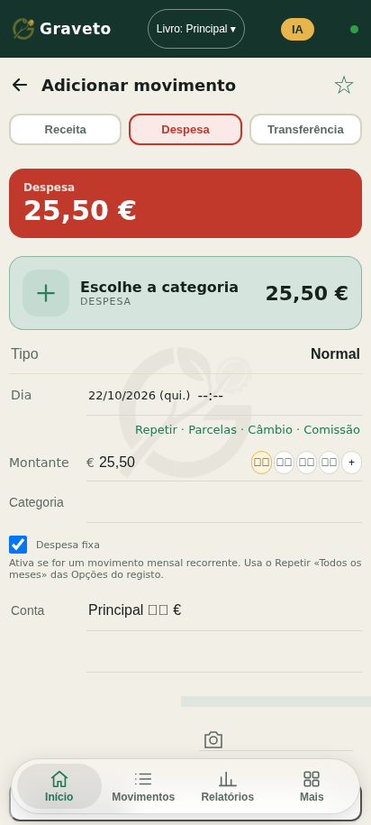
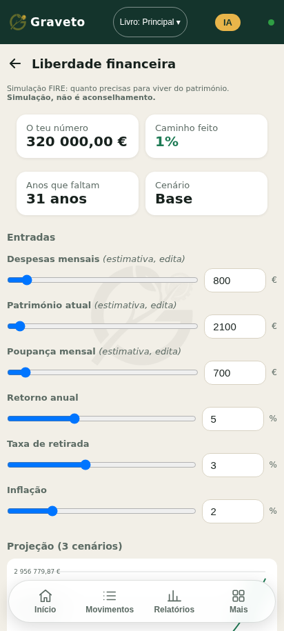
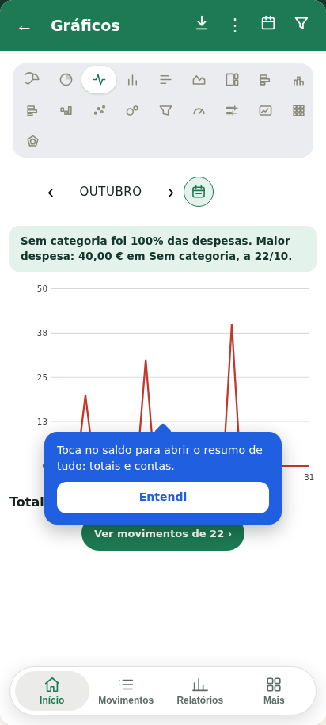

O teu dinheiro, com calma. Receitas, despesas, orçamentos e planos - tudo no teu telemóvel, só teu.
Queríamos uma app de dinheiro simples e honesta: sem criar conta, sem anúncios, sem mensalidades, sem nada escondido. Não encontrámos - então fizemo-la em família. É grátis, funciona sem internet e os dados ficam contigo.
O essencial do dia a dia e mais um pouco, sem complicar.
Três espreitadelas (imagens de teste, com dados fictícios).



Para trazeres o teu histórico de outra app ou do Excel. Na app: Mais › Ferramentas › Importar CSV.
Colunas: Data, Hora, Tipo, Categoria, Subcategoria, Conta, Conta de, Conta para, Moeda, Valor, Valor em euros, Nota, Detalhes, Etiquetas. Separa por ponto e vírgula; valores com vírgula.
Descarregar o modelo CSVSem contas, sem servidores nossos, sem anúncios, sem rastreio. Os teus dados vivem no teu telemóvel. Podes proteger a app com PIN ou impressão digital e esconder os valores com um toque.